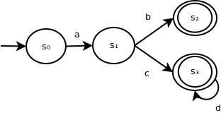

A deterministic finite automaton (DFA for short) is a tool that can be used to recognize strings as part of a regular language.
The following is an example of a DFA:
It contains 4 states (the circles) and 4 state transitions (the arrows between states).
State s0 is the initial state (indicated by the arrow coming from no other state), while s2 and s3 are accepting states (indicated by the double circle).
This DFA accepts the language represented by the following regular expression:
R = ab ∪ acd*
In general, a DFA consists of:
In DFAs, we have a few inherent structural restrictions, as follows:
To determine whether s = {σ1σ2...σn} belongs to the language recognized by DFA with states S, transitions T[si, t], initial start si:
Informally, we begin with our initial state, and transition to subsequent states for each symbol in the input.
We reject the language if we end on a non-accepting state at the end of our input or attempt an invalid transition. We accept if an accepting state is reached at end of input.
Example
For s = acd
| State | Input symbol | Action |
|---|---|---|
| s0 | a | Transition to s1 |
| s1 | c | Transition to s3 |
| s3 | d | Transition to s3 |
| s3 | $ (end of string) | Accept (since s3 is an accepting state) |
Example
For s = a
| State | Input symbol | Action |
|---|---|---|
| s0 | a | Transition to s1 |
| s1 | $ (end of string) | Reject (since s1 is not an accepting state) |
Example
For s = b
| State | Input symbol | Action |
|---|---|---|
| s0 | b | Reject (since no transition exists from s0 for symbol b) |
GitHub Repository: https://github.com/bprollinson/ripal
Copyright © 2017 Brendan Rollinson-Lorimer